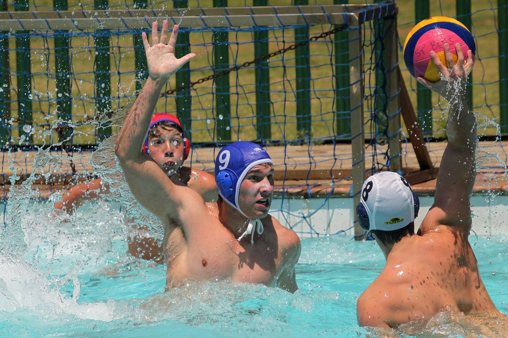

The Road to the NCAA Tournament Starts Earlier Than You Think
Every spring, the nation's top women's college water polo programs battle for conference championships — and with them, coveted bids to the NCAA Tournament. These high-stakes competitions showcase some of the most talented athletes in the country, players who spent years developing their skills, their teamwork, and their mental toughness long before they ever wore a college uniform. For families in Wesley Chapel, Land O' Lakes, and across the Tampa Bay area watching these moments unfold, it is worth asking: what does it actually take to reach that level, and when does the journey begin?
Why Conference Championships Matter — Even to Youth Athletes
The NCAA Tournament selection process in women's water polo is highly competitive. Conference championships serve as automatic qualification pathways, meaning that a team's entire season can hinge on a single tournament weekend. Programs invest enormous resources into recruiting, coaching, and player development precisely because the margin between advancing and going home is so thin.
For young athletes and their parents, understanding this landscape early is a genuine advantage. College coaches are not simply looking for the fastest swimmer or the strongest shooter in isolation. They are actively recruiting players who demonstrate coachability, positional awareness, athletic maturity, and a proven history of competing within a team structure. These qualities are built over years, not months — and they are built in club and academy environments just like the one young athletes train in right now.
What College Coaches Are Really Looking For
Parents often ask when it is appropriate to start thinking about college recruitment. The honest answer is that by the time recruitment conversations begin — typically around ninth or tenth grade — the foundation should already be in place. College coaches evaluating prospects at the club level are looking for several key qualities:
- Technical fundamentals: Proper eggbeater mechanics, accurate passing, and sound defensive positioning are non-negotiable at the collegiate level.
- Game intelligence: Players who read the game, communicate with teammates, and make smart decisions under pressure stand out immediately.
- Consistency over time: A long track record of improvement and effort demonstrates the kind of discipline that college programs trust.
- Competitive experience: Exposure to high-level tournament play prepares young athletes for the intensity of college competition.
Building That Foundation in Tampa Bay
The good news for families in the Wesley Chapel and Land O' Lakes area is that elite development opportunities are closer than many people realize. At Nexar Aquatic Academy, young athletes train in a structured environment designed to develop both the physical and mental skills that college programs seek. Whether a player is brand new to water polo or already competing at a travel level, intentional coaching at the club stage is what separates athletes who plateau from those who continue to grow.
It is also worth noting that swimming ability remains one of the most critical factors in water polo development. Young athletes who invest in improving their swim fitness give themselves a measurable edge in endurance, positioning, and overall court coverage during a game.
Dream Big, Train with Purpose
Watching college athletes compete for NCAA bids is exciting, but it is most meaningful when young athletes see themselves in those moments — not as distant spectators, but as players actively working toward a similar future. Every practice, every sprint set, and every scrimmage is a small deposit toward a larger goal.
At Nexar Aquatic Academy, we believe that every young athlete in the Tampa Bay area deserves access to the kind of coaching and competitive environment that makes college-level dreams feel achievable. The journey starts in the pool, and it starts today.
Ready to get in the water?
First practice is completely FREE — no commitment needed.